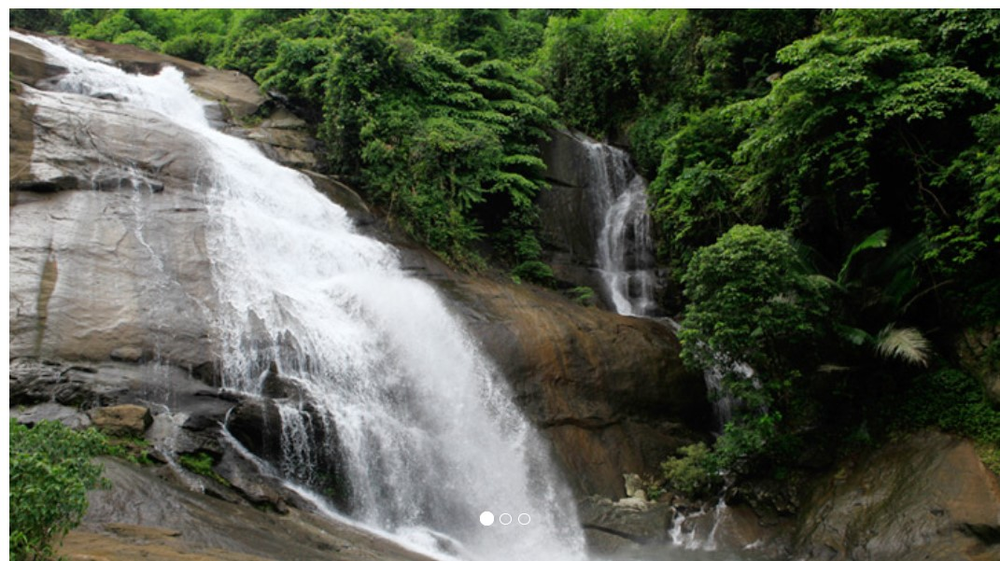
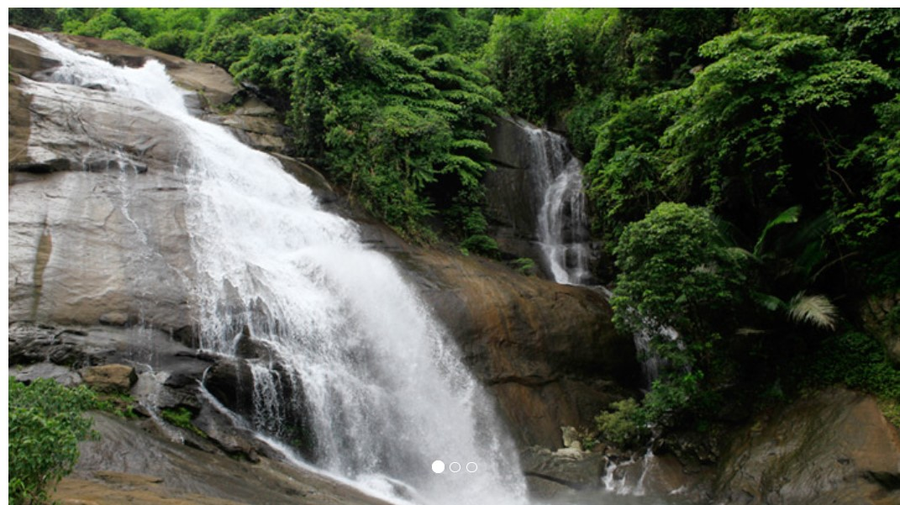

WELCOME TO THUSHARAGIRI
Two streams originating from the Western Ghats meet here to form the Chalippuzha River. The river diverges into three waterfalls creating a snowy spray, which gives the name, 'Thusharagiri' a word which means the snow-capped mountain. Of the three waterfalls, the highest is the Thenpara, falling from an altitude of 75 metres (246 ft). The other two are the Erattumukku falls and Mazhavil Chattam falls.Thusharagiri Falls is a waterfall located in Kozhikode district in the Indian state of Kerala, India. Two streams originating from the Western Ghats meet here to form the Chalippuzha River.Hence the area came to known as Thusharagiri - the mist capped mountain. To prevent mishaps, during peak monsoon, officials secure the area around the waterfalls with chains. After monsoon, chains are removed. Then visitors are allowed access to get busy with refreshing dips.
RULES AND REGULATIONS
- While visiting a Wildlife sanctuary, one must follow the below mentioned safety rules and carry the required documents and permission letters from the respective authorities.
- Distributing any kind of edibles to the animals on the go is strictly prohibited.Touching, cutting and removing of any plants and flowers are strictly prohibited.
- Touching, cutting and removing of any plants and flowers are strictly prohibited.Plant materials both that are living or dead are not to be touched or removed as they are used to stabilize tidal flats and bluffs.Entering zones where it says prohibited zone or fenced is strictly prohibited.
- Entering zones where it says prohibited zone or fenced is strictly prohibited.
- Removing or alerting any kind of sign or post in the forest is strictly prohibited.
- Safety first, fun next. See to that you travel in a closed vehicle whether jeep or van with all the doors and windows closed. MADE BY GOVERMENT OF INDIA